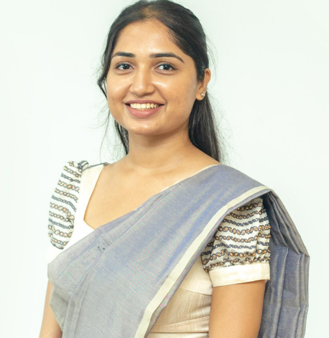
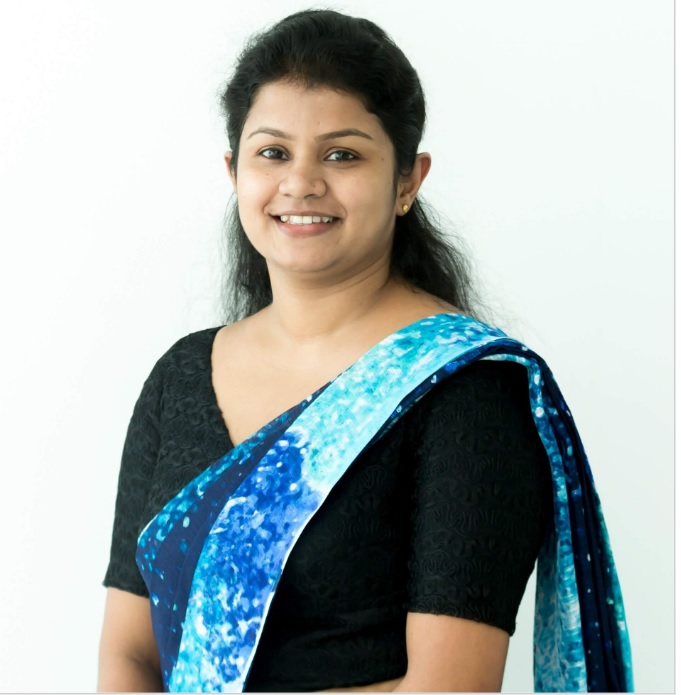
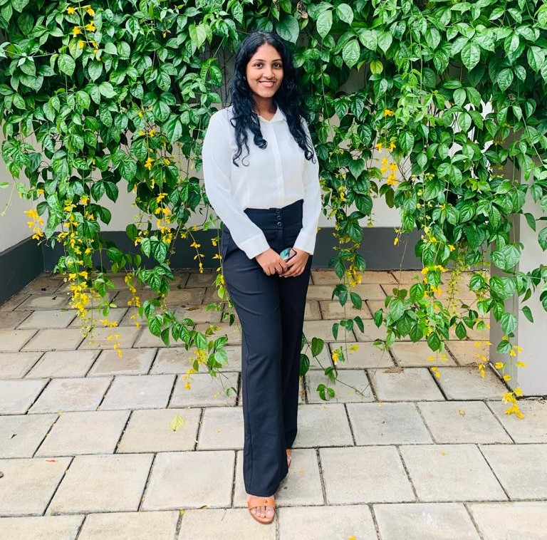
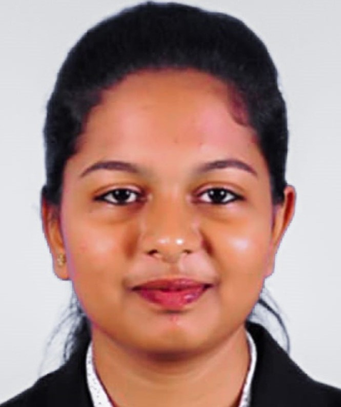

We are committed to helping you with one of the most important
decisions pertaining to your graduate studies. Please select your
relevant field of study.
Lecturers
Receive Guidance from Lecturers. Consult lecturers of National
Institute of Business Management with years of experience.These
lecturers are willing to guide you through the process of selecting
the best career route for you.
Mrs. Anne Pathiranage
Mrs. Anne Pathiranage is a senior Lecturer of Department of
Accounting and Finance attached to faculty of Business.
Mr. Praveen Ranaweera
Mr. Praveen Ranaweera is a Lecturer of Department of
Operations and Logistics attached to faculty of Business.

Ms.Fairoza Fairooz
Ms. Fairoza Fairooz is a Lecturer of Department of English
and Modern Languages attached to faculty of Business.
Mrs.Jayani Perera
Mrs.Jayani Perera is a lecturer of Department of Legal
Studies attached to faulty of business.
Mr. Mohamed Shafraz
Mohamed Shafraz is a Senior Lecturer of School of Computing
at NSBM.
Mr. Naji Saravanabavan
Mr. Naji Saravanabavan is a senior Lecturer of School of
Computing at NSBM.

Mrs.Manoja Weerasekara
Mrs.Manoja Weerasekara is a senior lecturer attached to
Faculty of Computing.
Mr. Pramudya Thilakarathne
Mr. Pramudya Thilakarathne is a Lecturer of School of
Computing at NSBM.
Mr. Deshaja Dewapriya
Mr. Deshaja Dewapriya is a Lecturer of Department of Design
Studies Faculty of Engineering.
Mr. Wepul Arachchige
Mr.Wepul Arachchige is a Lecturer of Department of Design
Studies attached to the faculty of Engineering.
Senior Students
Receive Guidance from Senior Students. Consult senior students of
National Institute of Business Management who are willing to help
you through the process of selecting the best and most suitable
degree program for you.e most important decisions pertaining to your
graduate studies. Please select your relevant field of study.

Vishmi Hettiwatthage
BSc (Hons) International Management and Business affiliated
with Plymouth University Batch: 19.2
W P H K Weerasinghe
BSc in Management Information Systems

J.A.Minsara Sharindi
BSc (Honours) Software Engineering degree (University of
Plymouth, United Kingdom)
Lakshan Jayathunga
Bachelor of Interior Design (UGC) Batch:20.2
Githmi Umayangi
Bachelor of Interior Design (UGC) Batch:20.1
/img/legle1.png)
/img/cpro (1).png)
/img/wepul.png)
/img/weerasingha.jpg)